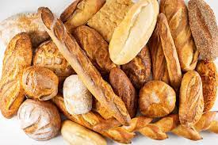
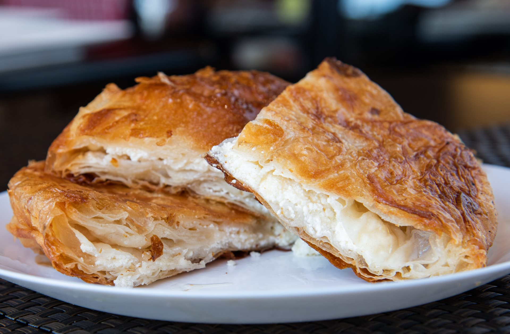

Domaći Sendviči

Uvek Vrhunska Pizza

Razne vrste hlebova
Svež burek
Domaći Sendviči
Uvek Vrhunska Pizza
Pređite mišem preko pice

Pekarski proizvodi postoje hiljadama godina. Umetnost pečenja razvijena je rano tokom Rimskog carstva. Bila je to veoma poznata umetnost jer su rimski građani voleli peciva i često ih zahtevali za važne prilike kao što su gozbe i venčanja. Zbog slave pekarske umetnosti, oko 300. godine pre nove ere, pečenje je uvedeno kao zanimanje i ugledno zanimanje Rimljana. Pekari su počeli da spremaju hleb kod kuće u peći, koristeći mlin za mlevenje žitarica u brašno za svoje hlebove. Potražnja za pekarskim proizvodima je i dalje i dalje, a prvi ceh pekara osnovan je 168. pre Hrista u Rimu. Želja za pekarskim proizvodima promovisala je pečenje širom Evrope i proširila se na istočne delove Azije. Više na ovu temu na stranici O Nama